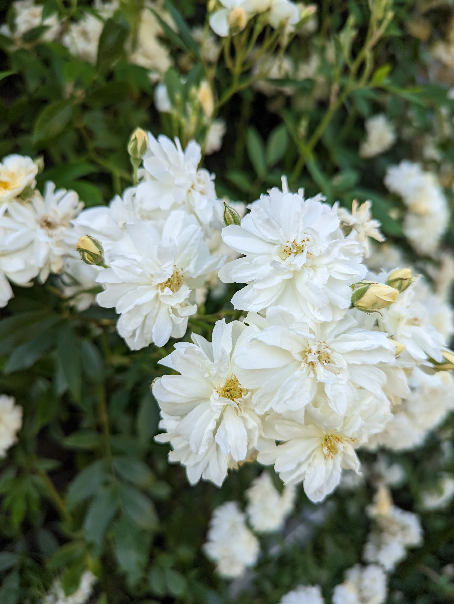
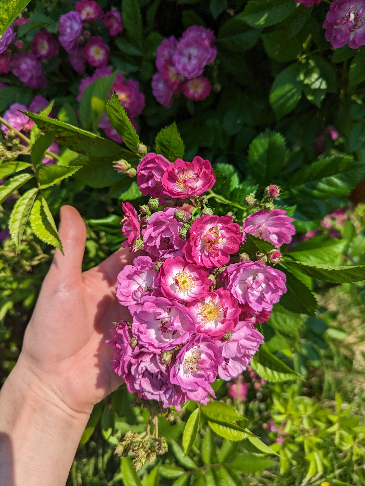
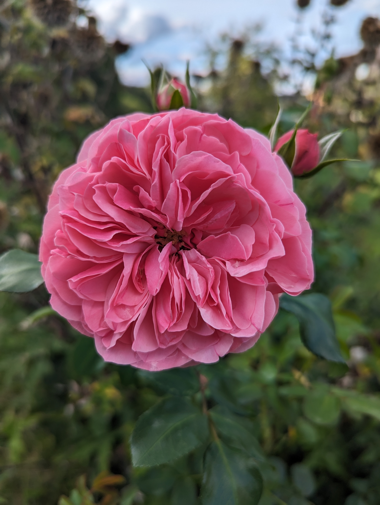
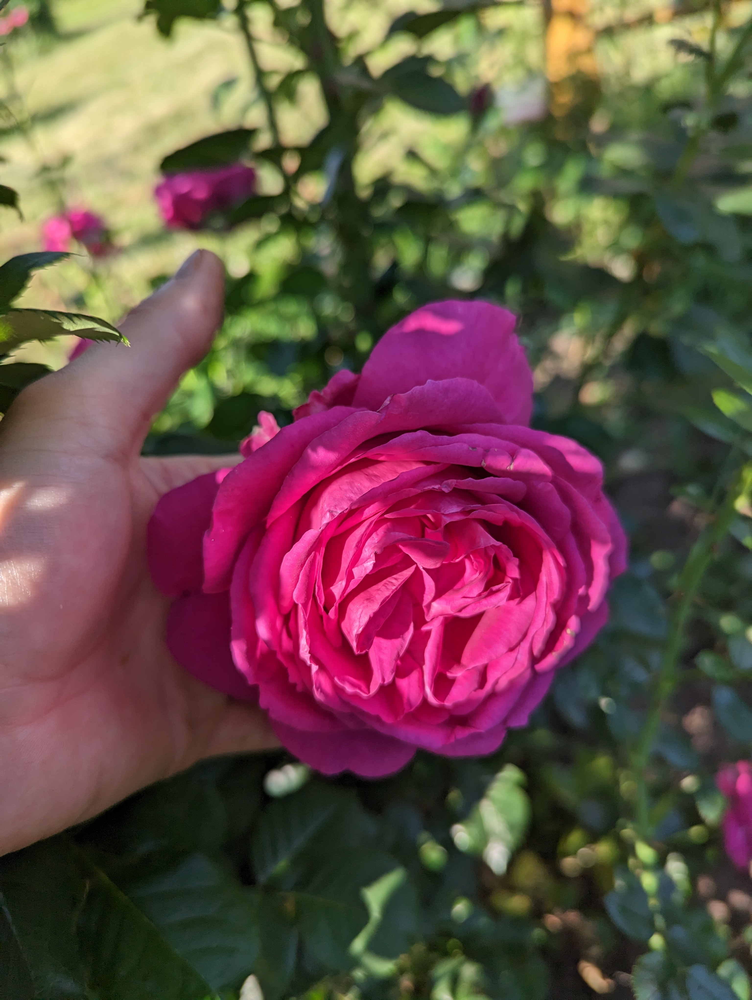

About my garden
Hello, my name is Olga and I like very much to work in my garden. In my garden there are many trees, buches and flowers. My favourite flowers are roses.
Roses in my garden
In my garden there are 14 different cultivars of roses and I would like to tell you a bit about these beautiful flowers.
Climbing roses
With their large, nostalgic, single or semi-filled flowers, climbers
put on an impressive show of colourful petal power. I have two
climbing roses: "Eden Rose 85" and "Laguna".
Below is a photo of the "Eden Rose 85".

Rambler roses
Rambler roses are perfect for covering a large wall or pergola, or
growing into the canopy of a large, established tree. I have two
cultivars of rambler roses: white "Snow Goose" and a
purple "Perrenial Blue" rose.


Floribunda roses
There are a lot of cultivars of floribunda roses. My favourite ones
are with white, pink and purple flowers. In my garden growing three
schrubs of pink "Leonardo da Vinci" and also three
schrubs of "Für Elize" roses.


Roses I want to plant in future
Also I like following three cultivars, which I have not planted in my gaerden yet.
- Floribunda Rose "Kimono"
- Floribunda Rose "Bonica"
- Floribunda Rose "Cinderella"
Other flowers
Beside roses there are also other flowers in my garden. For example I
like very much purple clematis and irises.